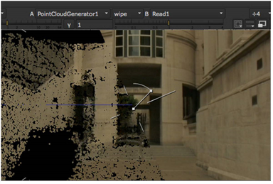

You can filter your point cloud by adjusting the number and quality of points it includes. NukeX filters the tracked point cloud directly, without recalculating, streamlining your workflow.
| 1. | Ensure that Display rejected points is enabled and adjust the threshold controls to update the 3D Viewer dynamically. Rejected tracks are highlighted in red. |
| 2. | Adjust the Angle Threshold to set the minimum acceptable angle to triangulate 3D points (in degrees). Points with a large triangulation angle tend to be more accurate. |
Set a threshold of 0 to triangulate all points or increase the threshold to highlight the least accurate points.
TIP: As a rule of thumb, anything below 5 degrees is likely to be incorrect.
| 3. | Adjust the Density Threshold to set the minimum acceptable point density. Isolated points tend to be less accurate. |
Set a threshold of 0 to output all points or increase the threshold to highlight the most isolated, less accurate points.
| 4. | The Viewer wipe tool can help you locate isolated points by comparing the 2D source footage to the point cloud. |
Set Input A to the PointCloudGenerator node and Input B to the Read node for the source image.

See Using the Viewer Controls for more information.
| 5. | Proceed to Removing Rejected Points. |
|
|